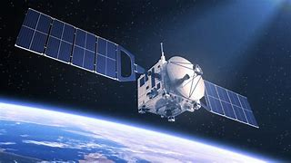

Hal ini terus berlanjut hingga tahun 2010-an, ketika kemunculan perusahaan antariksa swasta seperti SpaceX memicu peningkatan jumlah peluncuran yang terus meningkat tajam. Pada 2024, sebuah roket diluncurkan rata-rata setiap 34 jam, menempatkan lebih dari 2.800 satelit ke orbit. Kemudian, pada Mei 2025, ada sekitar 11.700 satelit aktif yang mengorbit di sekitar Bumi. Jonathan McDowell, seorang astronom di Pusat Astrofisika Harvard & Smithsonian yang telah melacak satelit sejak 1989 menyebut sebagian besar di antaranya berada di LEO. Satelit LEO berada di bawah 2.000 kilometer di atas permukaan planet kita. Menurut data dari Kantor Urusan Luar Angkasa Perserikatan Bangsa-Bangsa (PBB), jumlah total satelit, termasuk satelit yang telah berhenti bekerja dan sedang menunggu untuk diorbitkan atau dipindahkan ke "orbit kuburan" yang lebih tinggi, bisa mencapai 14.900. Kendati begitu, jumlah ini lebih sulit untuk dilacak dengan Baca artikel CNN Indonesia "Berapa Jumlah Satelit yang Mengorbit Bumi?"/